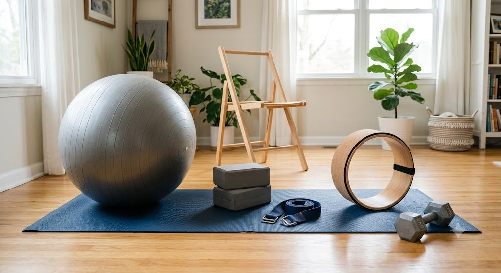

Meditation & Breathwork
Sessions for better sleep and nervous system regulation — a way out of perpetual high alert into rest.
Practice
Each session is held with care — from fertility and hormonal health to pregnancy, recovery, weight management, breath, and ritual.

Dealing with PCOS, PCOD, irregular periods, blocked fallopian tubes, and peri-menopause. Gentle, targeted work that supports reproductive and hormonal wellbeing without pushing the body into more stress.
Support for fertility, testosterone levels, prostate health, and cortisol control. Practice that helps the body step out of constant high alert so recovery and vitality can return.
Safe, nurturing yoga for each trimester to help with pelvic strength, hip mobility, lower back pain, and connecting with the baby. Private 1:1 sessions are available for pregnant women only.
For unheard stress, pain, and to restore energy as you navigate the beautiful journey of motherhood. Slow, structured support for body and emotion after birth.
Focus on core-strengthening postures, twists, and sitting/standing routines aimed at abdominal conditioning, waist shaping, and full-body toning — seeking natural weight management.
Sessions for better sleep and nervous system regulation — a way out of perpetual high alert into rest.
Specially designed for pregnant mothers for the overall well-being of mother and child.
Expertly guided workshops from breathwork to meditation, labour visualization processes, and more. Each session offers practical tools toward balance, inner peace, and holistic well-being.